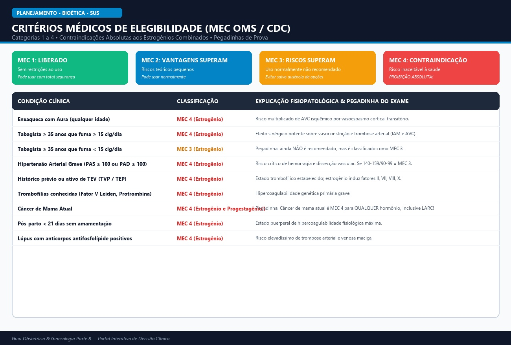

Fisiologia da Contracepção, Índice de Pearl & Critérios Médicos de Elegibilidade (MEC OMS/CDC)
🎈 Didática para Criança de 5 Anos: A Coleção de Capas de Chuva Mágicas
Toda vez que a sementinha quer achar a florzinha na casinha da mamãe, pode nascer um bebê. A anticoncepção é como uma coleção de capas mágicas: alguns trancam o portão (camisinha), outros dizem para o jardim não soltar flores (remédios que impedem a ovulação) e outros colocam uma estrelinha de brinquedo (DIU) cheia de geleia para a sementinha não conseguir nadar! O médico nunca manda: ele mostra as capas e ajuda a escolher a mais segura!
Raciocínio Ivy League: Fisiopatologia das Contraindicações Absolutas (MEC 4)
O componente estrogênico (etinilestradiol) induz síntese hepática acelerada dos fatores II, VII, VIII, X e fibrinogênio, e inibe antitrombina III e proteína S. Por isso, toda condição com dano vascular ou pró-trombótica contraindica estrogênios combinados (MEC 4):
- Enxaqueca com Aura: Vasoespasmo cortical transitório + estrogênio = risco crítico de AVC Isquêmico.
- Tabagismo em mulheres ≥ 35 anos (≥ 15 cigarros/dia): Sinergismo aterotrombótico para infarto e AVC.
- Hipertensão Grave (PAS ≥ 160 ou PAD ≥ 100 mmHg): Risco inaceitável de AVC hemorrágico e dissecção.
- Histórico ou TEV ativo e Trombofilias conhecidas: Risco imediato de recidiva tromboembólica fatal.
- Câncer de Mama Atual: MEC 4 para QUALQUER método hormonal (inclusive implante e DIU de levonorgestrel). Apenas o DIU de cobre é livre de hormônio (MEC 1).

| Tier / Eficácia | Método Contraceptivo | Falha Uso Típico | Falha Uso Perfeito | Mecanismo de Ação Principal |
|---|---|---|---|---|
| Tier 1 (LARC) | Implante Etonogestrel (Implanon) | 0,05% | 0,05% | Anovulação persistente + espessamento do muco cervical |
| Tier 1 (LARC) | DIU Levonorgestrel 52mg (Mirena) | 0,1–0,2% | 0,1% | Atrofia endometrial intensa + muco impenetrável |
| Tier 1 (LARC) | DIU de Cobre (TCu380A) | 0,8% | 0,6% | Reação inflamatória estéril + efeito espermicida dos íons de cobre |
| Tier 2 | Pílulas Combinadas / Anel / Adesivo | 7–9% | 0,3% | Bloqueio central do eixo hipotálamo-hipófise (FSH/LH) |
| Tier 3 | Preservativo Masculino | 13% | 2% | Barreira mecânica (Único método que protege contra ISTs/HIV!) |